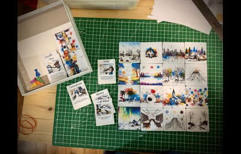
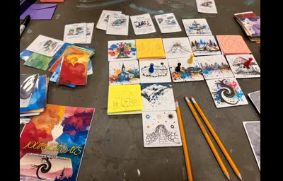
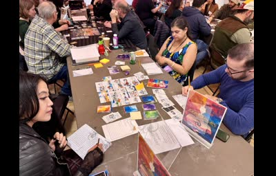
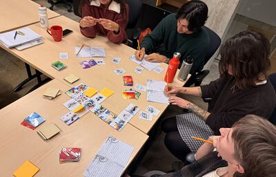
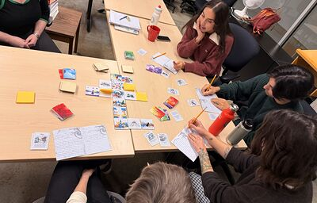
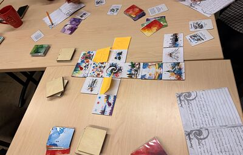

Research Gallery & Media

Board Game Setup
JOURNEYWAYS featured at ProtoConBC, October 2025. Initial board configuration: tiles, cards, and play space ready for solo or group play.

Board Game Components
Cards, tiles, tokens, and player booklets laid out for play.

Players in Action
Players engaging with the board game: identity exploration and collaborative storytelling in practice.

Journaling in Play
Second playtest of JOURNEYWAYS with the EDGES research group at UBC, November 2025. Character cards drawn, journals open, individual reflection alongside shared play.

Around the Table
A wider view of the same session, with several participants engaged simultaneously around the shared table.

Board State Mid-Session
Top-down view of the board mid-session: tiles placed, cards drawn, journals at hand.